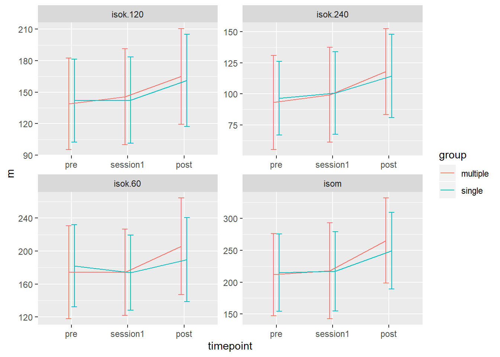
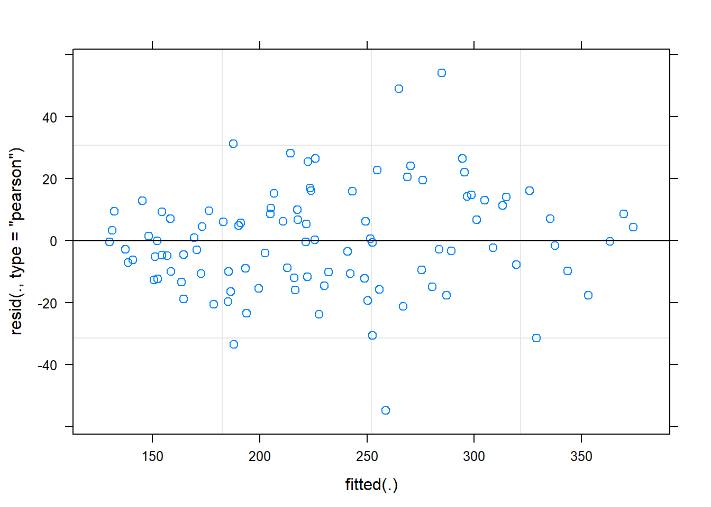

library(tidyverse) # Tidyverse includes the readr package
read_csv("./data/strengthTests.csv") %>%
filter(!is.na(load)) %>% # Removes missing values
# Summarise values per group, timepoint, exercise
group_by(timepoint, group, exercise) %>%
summarise(m = mean(load),
s = sd(load),
n = n()) %>%
group_by() %>% # removes grouping from data frame
# Change levels in timepoint
mutate(timepoint = factor(timepoint,
levels = c("pre",
"session1",
"post"))) %>%
# Creates plot
ggplot(aes(timepoint, m, group = group, color = group)) +
geom_errorbar(aes(ymin = m-s, ymax = m + s),
width = 0.2,
position = position_dodge(width = 0.2)) +
geom_line(position = position_dodge(width = 0.2)) +
facet_wrap(~ exercise, scales = "free")
A pre- to post-training design may be analyzed by post-values only. This is “ineffective” as we need many more participants to show a difference that is true. The example below is an example of such analysis.
## Bad example, inefficient statistical test
temp <- read_csv("./data/strengthTests.csv") %>%
filter(!is.na(load),
timepoint == "post",
exercise == "isom") %>%
print()## # A tibble: 33 x 6
## subject timepoint exercise load sex group
## <chr> <chr> <chr> <dbl> <chr> <chr>
## 1 FP11 post isom 281 male single
## 2 FP12 post isom 308 female single
## 3 FP13 post isom 294. male multiple
## 4 FP14 post isom 226 female single
## 5 FP15 post isom 298. male single
## 6 FP16 post isom 248 female single
## 7 FP17 post isom 336. male multiple
## 8 FP19 post isom 266 male single
## 9 FP2 post isom 216. female multiple
## 10 FP20 post isom 146. female single
## # ... with 23 more rowst.test(load ~ group, data = temp)##
## Welch Two Sample t-test
##
## data: load by group
## t = 0.7171, df = 30.143, p-value = 0.4788
## alternative hypothesis: true difference in means is not equal to 0
## 95 percent confidence interval:
## -29.43928 61.31060
## sample estimates:
## mean in group multiple mean in group single
## 265.4062 249.4706Instead of using post-training data only, we can model the change. This can also be done in a t-test:
change.data <- read_csv("./data/strengthTests.csv") %>%
filter(!is.na(load),
exercise == "isom") %>%
mutate(timepoint = if_else(timepoint == "session1",
"pre", timepoint)) %>%
group_by(subject, timepoint, group, sex) %>%
summarise(load = mean(load, na.rm = TRUE)) %>%
pivot_wider(names_from = timepoint,
values_from = load) %>%
mutate(change = (post - pre)/pre * 100) %>%
ungroup() %>%
mutate(pre.mc = pre - mean(pre))
t.test(change ~ group, data = change.data, var.equal = TRUE)##
## Two Sample t-test
##
## data: change by group
## t = 1.9157, df = 31, p-value = 0.06466
## alternative hypothesis: true difference in means is not equal to 0
## 95 percent confidence interval:
## -0.6369364 20.3495114
## sample estimates:
## mean in group multiple mean in group single
## 27.15581 17.29952The t-test “controls” for baseline as we model the change from each individual baseline. To further account for the baseline, we can include it in a model. The t-test can be performed as a linear model, which can be extended.
## Linear model (same as t-test)
m1 <- lm(change ~ group, data = change.data)
summary(m1)##
## Call:
## lm(formula = change ~ group, data = change.data)
##
## Residuals:
## Min 1Q Median 3Q Max
## -23.154 -10.528 -2.159 11.050 32.369
##
## Coefficients:
## Estimate Std. Error t value Pr(>|t|)
## (Intercept) 27.156 3.693 7.354 2.8e-08 ***
## groupsingle -9.856 5.145 -1.916 0.0647 .
## ---
## Signif. codes: 0 '***' 0.001 '**' 0.01 '*' 0.05 '.' 0.1 ' ' 1
##
## Residual standard error: 14.77 on 31 degrees of freedom
## (1 observation deleted due to missingness)
## Multiple R-squared: 0.1059, Adjusted R-squared: 0.07701
## F-statistic: 3.67 on 1 and 31 DF, p-value: 0.06466## Linear model with baseline values as covariate
m2 <- lm(change ~ pre.mc + group, data = change.data)
summary(m2)##
## Call:
## lm(formula = change ~ pre.mc + group, data = change.data)
##
## Residuals:
## Min 1Q Median 3Q Max
## -20.662 -9.025 -1.546 5.773 33.753
##
## Coefficients:
## Estimate Std. Error t value Pr(>|t|)
## (Intercept) 26.96193 3.03338 8.888 6.6e-10 ***
## pre.mc -0.13325 0.03336 -3.994 0.000388 ***
## groupsingle -9.57619 4.22633 -2.266 0.030839 *
## ---
## Signif. codes: 0 '***' 0.001 '**' 0.01 '*' 0.05 '.' 0.1 ' ' 1
##
## Residual standard error: 12.13 on 30 degrees of freedom
## (1 observation deleted due to missingness)
## Multiple R-squared: 0.4163, Adjusted R-squared: 0.3774
## F-statistic: 10.7 on 2 and 30 DF, p-value: 0.0003113In the code chunk options, remember to set results = "asis" to get a table from kable.
library(broom) # is used for formatting model summaries
library(knitr) # is used for making tables
# A simple table from m2 above
tidy(m2) %>%
# Change names of the term column
mutate(term = if_else(term == "(Intercept)", "Intercept",
if_else(term == "pre.mc", "Baseline",
"Single-set"))) %>%
# kable is used to "create" the table. In practice, it
# translates your table to html-code.
kable(col.names = c("Parameter",
"Estimate", "SE",
"t-value", "p-value"),
digits = c(NA, 2, 2, 2, 3))| Parameter | Estimate | SE | t-value | p-value |
|---|---|---|---|---|
| Intercept | 26.96 | 3.03 | 8.89 | 0.000 |
| Baseline | -0.13 | 0.03 | -3.99 | 0.000 |
| Single-set | -9.58 | 4.23 | -2.27 | 0.031 |
library(lme4); library(broom)
# Alternative 1 (Two pre- time-points)
raw.data <- read_csv("./data/strengthTests.csv") %>%
filter(!is.na(load),
exercise == "isom") %>%
mutate(timepoint = if_else(timepoint == "session1",
"pre", timepoint)) %>%
mutate(timepoint = factor(timepoint,
levels = c("pre", "post"))) %>%
print()## # A tibble: 101 x 6
## subject timepoint exercise load sex group
## <chr> <fct> <chr> <dbl> <chr> <chr>
## 1 FP11 pre isom 256. male single
## 2 FP11 pre isom 252 male single
## 3 FP11 post isom 281 male single
## 4 FP12 pre isom 246. female single
## 5 FP12 pre isom 290. female single
## 6 FP12 post isom 308 female single
## 7 FP13 pre isom 204 male multiple
## 8 FP13 pre isom 210. male multiple
## 9 FP13 post isom 294. male multiple
## 10 FP14 pre isom 197 female single
## # ... with 91 more rows# Alternative 2 (combine pre and session1 into one time-point)
raw.data <- read_csv("./data/strengthTests.csv") %>%
filter(!is.na(load),
exercise == "isom") %>%
mutate(timepoint = factor(timepoint,
levels = c("pre",
"session1",
"post"))) %>%
print()## # A tibble: 101 x 6
## subject timepoint exercise load sex group
## <chr> <fct> <chr> <dbl> <chr> <chr>
## 1 FP11 pre isom 256. male single
## 2 FP11 session1 isom 252 male single
## 3 FP11 post isom 281 male single
## 4 FP12 pre isom 246. female single
## 5 FP12 session1 isom 290. female single
## 6 FP12 post isom 308 female single
## 7 FP13 pre isom 204 male multiple
## 8 FP13 session1 isom 210. male multiple
## 9 FP13 post isom 294. male multiple
## 10 FP14 pre isom 197 female single
## # ... with 91 more rows### Mixed model
# See lessons for interpretation of the model
m2 <- lmer(load ~ timepoint * group + (1|subject),
data = raw.data)
# Model summary
summary(m2)## Linear mixed model fit by REML ['lmerMod']
## Formula: load ~ timepoint * group + (1 | subject)
## Data: raw.data
##
## REML criterion at convergence: 969.7
##
## Scaled residuals:
## Min 1Q Median 3Q Max
## -2.61049 -0.50959 -0.02093 0.46177 2.57787
##
## Random effects:
## Groups Name Variance Std.Dev.
## subject (Intercept) 3777.6 61.46
## Residual 441.1 21.00
## Number of obs: 101, groups: subject, 34
##
## Fixed effects:
## Estimate Std. Error t value
## (Intercept) 211.765 15.753 13.443
## timepointsession1 6.118 7.204 0.849
## timepointpost 54.405 7.368 7.384
## groupsingle 3.265 22.278 0.147
## timepointsession1:groupsingle -3.941 10.188 -0.387
## timepointpost:groupsingle -19.964 10.304 -1.937
##
## Correlation of Fixed Effects:
## (Intr) tmpnt1 tmpntp grpsng tmpn1:
## timpntsssn1 -0.229
## timepontpst -0.224 0.489
## groupsingle -0.707 0.162 0.158
## tmpntsssn1: 0.162 -0.707 -0.346 -0.229
## tmpntpst:gr 0.160 -0.350 -0.715 -0.226 0.494# Diagnostics
plot(m2)
# Confidence intervals
confint(m2)## 2.5 % 97.5 %
## .sig01 47.309659 77.79019886
## .sigma 17.350856 24.36772641
## (Intercept) 181.056314 242.47309821
## timepointsession1 -7.772323 20.00761664
## timepointpost 40.196724 68.60797974
## groupsingle -40.163519 46.69293080
## timepointsession1:groupsingle -23.584560 15.70220690
## timepointpost:groupsingle -39.829013 -0.09333071library(knitr); library(broom)
# creating a table
# We can combine two data frames by adding columns or rows
# The cbind function adds two data frames with simialr rows.
# First we save a tidy output of model 2
tidy.m2 <- tidy(m2) %>%
filter(group == "fixed") # removes random effects from summary
# Next we store the confidence intervals from confint
# We have to select row 3 to 8 to get the same number of rows
confint.m2 <- data.frame(confint(m2))[c(3:8),]
# Next we can comine these by column
cbind(tidy.m2, confint.m2) %>%
select(-group) %>% # deselect "group"-column
kable(row.names = FALSE,
col.names = c("Parameter",
"Estimate",
"SE",
"Statistic",
"Lower CI",
"Upper CI"),
digits = c(NA, 1, 1, 2, 1, 1)) %>%
print()| Parameter | Estimate | SE | Statistic | Lower CI | Upper CI |
|---|---|---|---|---|---|
| (Intercept) | 211.8 | 15.8 | 13.44 | 181.1 | 242.5 |
| timepointsession1 | 6.1 | 7.2 | 0.85 | -7.8 | 20.0 |
| timepointpost | 54.4 | 7.4 | 7.38 | 40.2 | 68.6 |
| groupsingle | 3.3 | 22.3 | 0.15 | -40.2 | 46.7 |
| timepointsession1:groupsingle | -3.9 | 10.2 | -0.39 | -23.6 | 15.7 |
| timepointpost:groupsingle | -20.0 | 10.3 | -1.94 | -39.8 | -0.1 |